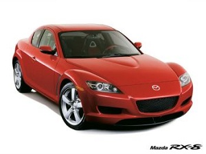

A világ leggyorsabb autói

Aston Martin Vantage
Az Aston Martin annyira túlmutat a normális autók világán, hogy csodálkoznék, ha akadna olyan olvasónk, aki vesz egyet, bár arra jó esély van, hogy aki végül igen, az előtte nálunk néz utána. Hogy is van a sportos autók szamárlétrája? Kezdem, mondjuk, a nagyszerű Fiat Panda 100HP-vel, 3 millióért, amit esetleg adott esetben meg is vennék. Aztán jön a kortárs hot hatch felhozatal, ami nem kéne, a nehéz, kitömött Golf GTI-kkel és Focus ST-kkel. Egy jó Subaru Impreza WRX STI-vel vagy Honda S2000-rel már át is léptük a tízmilliós határt, ami egy bérből és fizetésből élőnek gyakorlatilag nem létezővé tesz egy új autót.

Ferrari F40
Utálom leírni, de sajnos az F40-est nem volt alkalmam kipróbálni a cikk megírása előtt. Sőt, valószínűleg jobbrasoha nem is lesz. Csak esetleg akkor, ha mondjuk sikerül összehaverkodni a brunei szultánnal. Utóbbinak sajnos elhanyagolható az esélye, mivel viszonylag ritkán járunk ugyanazon szórakozóhelyekre. Más típusú Ferrarit még sikerült volna felhajtani egy menetpróba erejéig, de sajnos idő hiányában ezt is elvetettük. Marad tehát a nyálcsorgatás.

Mazda RX 8
A Mazda RX-8-as nem csak autóként vagy látványként számít érdekességnek, hanem a sztorija is rendkívül különleges. Kezdjük rögtön a legelején. Ötvenes évek, Németország. Felix Wankel professzor, egy német mérnök-géniusz 1957-ben szabadalmaztatta a forgódugattyús motor terveit. A konstrukció lényege, hogy egy domború oldalú háromszög (azaz epitrochoid) alakú forgódugattyú pörög excentrikusan a főtengely körül, és egyszerre végzi a szívás, a sűrítés, az expanzió, és a kipufogás feladatát.

Chrysler Crossfire
Német lapok információi szerint a Chrysler erősen visszaveszi a Crossfire gyártását. Az amerikaiak jelenleg évente 12.000 darabot építenek a kupéból, illetve a roadsterből, sajnálatos módon azonban a termelés jelentős része ott porosodik a márkakereskedésekben. Jelenleg a márka piaci elemzői szerint évi 4000 darabra lenne reális kereslet, a Chrysler szóvivője persze "roppant pesszimistának" nevezte ezeket a sajtóértesüléseket, mivel azonban ennél komolyabb cáfolat nem érkezett rá, ezért valószínűsíthető, hogy tényleg nem áll olyan jól a modell szénája.